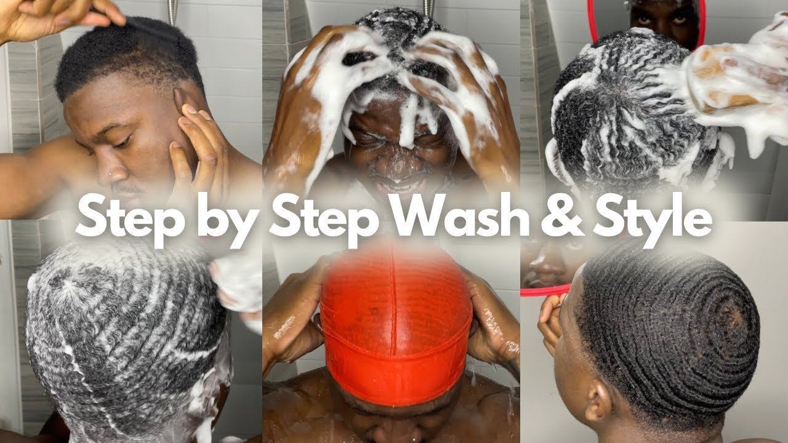

Dry Scalp and Flaking Under Waves: The Waver's Fix Guide
Flakes on a waver look twice as bad as flakes on anyone else — the pattern displays them like a dark shirt displays lint — and the cause is misdiagnosed half the time. What looks like dry scalp is often dried product sitting on the scalp; what looks like product is sometimes genuine dryness or a scalp condition that no routine fixes. PhdInWaves' (@Phdinwaves) wash-and-style below is the platform the fix runs on. This guide separates the three causes and gives each its correct response.
Diagnosis: buildup, dryness, or condition
Buildup flakes are soft, waxy, and yellowish-grey; they come with a dull pattern, an itchy-but-not-tight scalp, and gunk under your fingernails when you scratch. Dryness flakes are small, white, and powdery, with a scalp that feels tight and hair that feels brittle. A true scalp condition — persistent redness, stubborn patches, flakes that return within a day of a thorough wash — is a dermatologist's department, and no guide should pretend otherwise.
The test wash separates the first two: run a full, careful wash-and-style with two shampoo passes. If the flakes vanish for days, it was buildup. If they return immediately on a squeaky-clean scalp, it is dryness. Diagnose first — the treatments are opposites, and treating buildup with heavy oils (the common move) feeds the actual problem.
Fixing buildup
Buildup is a product-amount and wash-quality problem. Cut moisturiser amounts using the light-hand method, audit your lineup for heavy wax-based products, and make sure your wash days include genuine brush-driven shampoo work — hands skimming the surface never cleaned a scalp under trained hair.
A monthly clarifying wash resets the account. Most buildup cases improve within two wash cycles once amounts drop and washing gets serious; if yours does not, suspect one specific product and remove it for a month before blaming your scalp.
Fixing dryness
Dryness is a moisture-system problem: shampoo too harsh or too frequent, moisture applied to the hair but never reaching the scalp, and winter air doing its seasonal work. Switch to a gentler shampoo, protect one wash a week as the only wash, and apply your light oil to the scalp itself — fingertip amounts, in the parts, after washing while the scalp is receptive.
Also check the durag: a dirty durag against a dry scalp is an irritant delivery system, and cotton-lined anything will drink what moisture you add. Satin against the head, clean fabric, light hands — dry scalps under waves are very fixable once you are treating the right diagnosis.
Watch: the step-by-step wash & style from PhdInWaves — the wash is where scalp problems get fixed
Video: “360 Waves Wash & Style | Step By Step Tutorial” by PhdInWaves (@Phdinwaves) · Watch on YouTube
Shop the gear
Everything in this guide runs on the right gear: a durag that holds compression without slipping, a cap that stays put, and fabric that treats your hair right. The durag.store launch lineup is built to that standard — dual-layer construction, long tails, and stitching made to survive the routine. Join the launch list and use code GOLDSTANDARD for 15% off your first order.
Keep learning
- Fixing Forks in Your Waves: Why They Form and How to Brush Them Out — Intermediate · Troubleshooting
- Uneven Waves and Weak Sides: The Rebalancing Program — Intermediate · Troubleshooting
- Forehead Lines From Your Durag: Causes and Complete Fixes — Basic · Troubleshooting
Sources: Video — “360 Waves Wash & Style | Step By Step Tutorial” by PhdInWaves (@Phdinwaves), youtube.com. Guide written by the durag.store Wave Lab.